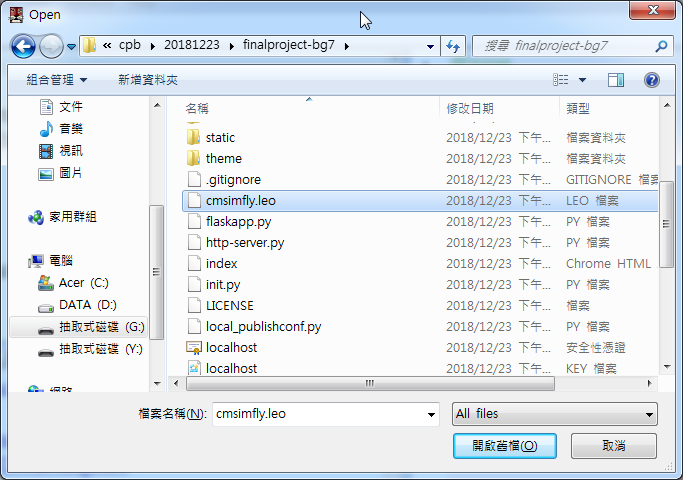
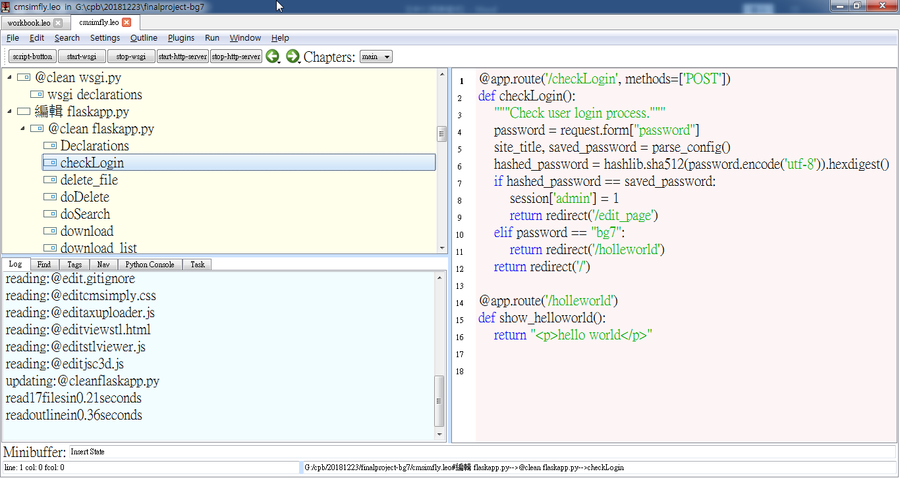
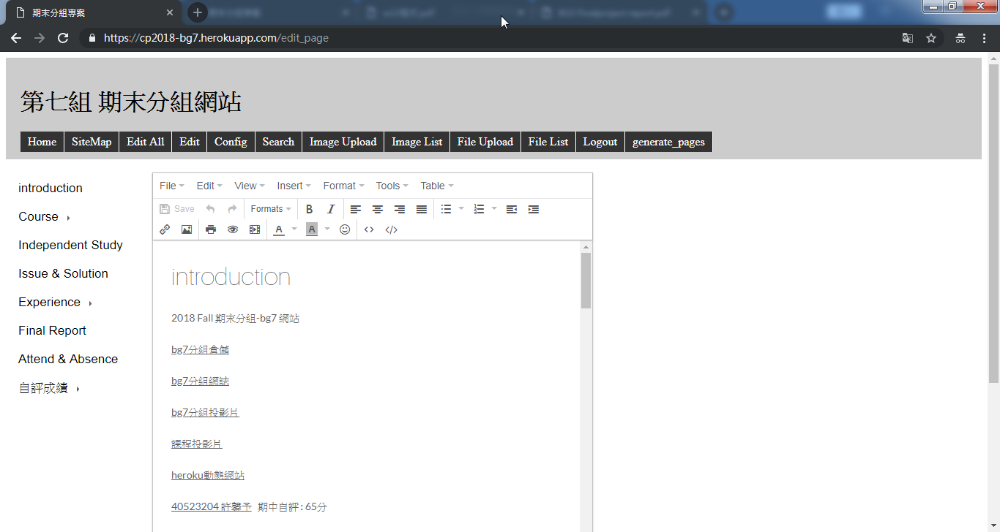
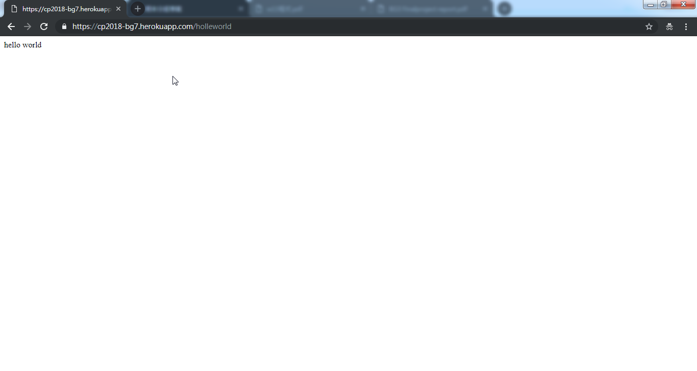

在分組網站中新增一組密碼並導向新的頁面
先找到cmsimfly.leo 並開啟

找到checklog , 新增下列程式
elif password == "bg7":
return redirect('/helleworld')
return redirect('/')
@app.route('/helleworld')
def show_helloworld():
return "hello world”

我們讓session[‘admin’] = 1 ，密碼打admin，程式執行時判斷admin變數等於1，則可以登入極管理網頁。

elif password == "bg7":
return redirect('/helleworld')
當輸入密碼是bg7 ，登入頁面導向(‘/ ‘)括弧內的字，這裏我們設定成helloword
